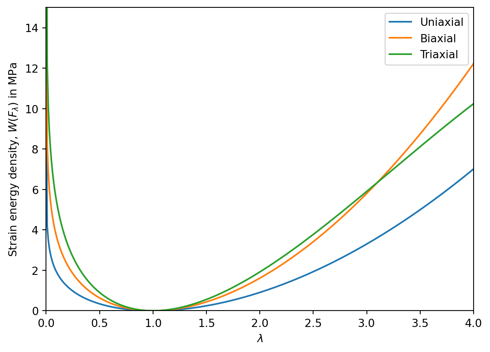
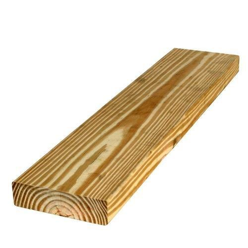

7 Solid Mechanics
In this chapter, we apply the principles we have developed to the study of solid materials, focusing specifically on elasticity theory. As mentioned, in solid mechanics the canonical choice is to use the Lagrangian or material formulation of the balance laws. In particular, we focus on the momentum balance equations, which are: \rho_0\frac{\partial^2{\boldsymbol{\varphi}}}{\partial t^2} = \nabla_{\boldsymbol{x}}\cdot {\boldsymbol{P}}+\rho_0{\boldsymbol{b}}_m, \quad\text{and}\quad {\boldsymbol{P}}{\boldsymbol{F}}^T = {\boldsymbol{F}}{\boldsymbol{P}}^T. \tag{7.1} We note that we can immediately deduce force balance equations for statice problems from these equations by neglecting the momentum change term, in which case they become \nabla_{\boldsymbol{x}}\cdot {\boldsymbol{P}}+\rho_0{\boldsymbol{b}}_m = {\boldsymbol{0}}, \quad\text{and}\quad {\boldsymbol{P}}{\boldsymbol{F}}^T = {\boldsymbol{F}}{\boldsymbol{P}}^T. \tag{7.2}
To make further progress with either of these sets of equations, we must introduce a constitutive law for the stress in terms of strain, often referred to as stress–strain relation.
7.1 Elastic solids
Elasticity refers to the property of solid objects to stretch and then return to their original shape, releasing energy in an (approximately) reversible process. To model such cases, we make the following definition.
Some notes on the above definition:
- The function \widetilde{{\boldsymbol{S}}} is called the elastic stress response function of the body.
- The dependence on the point {\boldsymbol{x}} in the stress response function allows us in general to represent the fact that the body may be made up of different materials in different places. The simplest cases have no explicit dependence on {\boldsymbol{x}}, in which case we say the body is homogeneous.
- Using the relationship between the Cauchy and Piola–Kirchhoff stresses, we can choose to prescribe either the Cauchy stress by defining a function \widetilde{{\boldsymbol{S}}} as above, or by prescribing the Piola-Kirchhoff stress by defining a function \widetilde{{\boldsymbol{P}}}({\boldsymbol{F}}). We can move between the two approaches using the relation: {\boldsymbol{P}}= \widetilde{{\boldsymbol{S}}}({\boldsymbol{F}}){\operatorname{cof}}{\boldsymbol{F}}= \det{\boldsymbol{F}}\,\widetilde{{\boldsymbol{S}}}({\boldsymbol{F}}){\boldsymbol{F}}^{-T}\quad\text{or}\quad {\boldsymbol{S}}= \frac{\widetilde{{\boldsymbol{P}}}({\boldsymbol{F}}){\boldsymbol{F}}^T}{\det {\boldsymbol{F}}}.
7.2 Hyperelasticity and conservation of energy
Next, we discuss conservation of energy. If we assume that the body is isothermal, so it is held at a constant temperature \theta=\theta_0 and there is no heat flow, then we neglect all heat related terms in the energy balance equation.
In particular, in the Lagrangian formulation, we neglect the heat flux {\boldsymbol{\kappa}}={\boldsymbol{0}} and the heat supply field r=0, and the local equation for conservation of energy in Lagrangian form is \rho_0\frac{\partial \phi_m}{\partial t} = {\boldsymbol{P}}:\frac{\partial{\boldsymbol{F}}}{\partial t}. This encodes the fact that the internal energy per unit mass only changes due to internal mechanical work, and no energy is lost as heat.
One way to guarantee that this equation holds is to assume that the Piola-Kirchhoff stress function can be expressed as the derivative of a function W:{\mathcal{V}}^2\to{\mathbb{R}} called the strain energy density, i.e. {\boldsymbol{P}}({\boldsymbol{F}}) = DW({\boldsymbol{F}})\quad\text{or in components}\quad P_{ij} = \frac{\partial W}{\partial F_{ij}}({\boldsymbol{F}}). Thanks to the chain rule, we find that \rho_0\frac{\partial \phi_m}{\partial t} = DW({\boldsymbol{F}}):\frac{\partial{\boldsymbol{F}}}{\partial t} = {\frac{{\mathrm{D}}}{{{\mathrm{D}}t}}}W({\boldsymbol{F}}). and so we find that (up to a constant) \rho_0\phi_m = W({\boldsymbol{F}}), where we are implicitly suppressing the dependence on the temperature \theta_0. This choice leads to the following definition.
We will see that the existence of a strain energy density leads to various interesting mathematical consequences.
7.3 Frame indifference
Above, we have seen that conservation of energy suggests a structure for the constitutive laws we can consider: likewise, we now show that the principle of frame indifference also constrains the possible stress reponse functions. In particular, we have the following result.
Proposition 7.1 If the following symmetry holds for the strain energy density: W({\boldsymbol{Q}}{\boldsymbol{F}}) = W({\boldsymbol{F}}) for any {\boldsymbol{F}}\in{\mathcal{V}}^2 with \det{\boldsymbol{F}}>0 and any rotation tensor {\boldsymbol{Q}}\in{\mathcal{V}}^2, then the internal energy and stress tensors are automatically frame indifferent.
Proof. Clearly, W is a frame indifferent field by the definition given at the end of Section 6.5, since W^* = W({\boldsymbol{F}}^*) = W({\boldsymbol{Q}}{\boldsymbol{F}}) = W, and so defining the internal energy per unit mass as \phi_m:=W/\rho_0, it must also be frame indifferent.
Next, we check that the assumption that {\boldsymbol{P}}= DW means that {\boldsymbol{S}} also transforms appropriately. Note that {\boldsymbol{S}}_m = \frac{{\boldsymbol{P}}{\boldsymbol{F}}^T}{\det{\boldsymbol{F}}}, and we need to show that {\boldsymbol{S}}^*_m = {\boldsymbol{Q}}{\boldsymbol{S}}_m{\boldsymbol{Q}}^T in order to verify the requirement of frame indifference. Using the chain rule, we have \frac{\partial W}{\partial F_{ij}} = \frac{\partial W}{\partial F^*_{kl}}\frac{\partial F^*_{kl}}{\partial F_{ij}} = \frac{\partial W}{\partial F^*_{kl}}\frac{\partial }{\partial F_{ij}}\Big(Q_{ka}F_{al}\Big) = \frac{\partial W}{\partial F^*_{kl}}Q_{ka}\delta_{ai}\delta_{jl} = \frac{\partial W}{\partial F^*_{kj}}Q_{ki}. Interpreting the above relationship in tensorial form, we have DW({\boldsymbol{F}}) = {\boldsymbol{Q}}^T DW({\boldsymbol{F}}^*) = {\boldsymbol{Q}}^T DW({\boldsymbol{Q}}{\boldsymbol{F}}). Multiplying on the right by ({\operatorname{cof}}{\boldsymbol{F}})^{-1}, then {\boldsymbol{Q}}^T{\boldsymbol{Q}}={\boldsymbol{I}} and using the fact that \det{\boldsymbol{Q}}= 1, we have {\boldsymbol{S}}_m = \frac{DW({\boldsymbol{F}}){\boldsymbol{F}}^T}{\det{\boldsymbol{F}}} = \frac{{\boldsymbol{Q}}^T DW({\boldsymbol{Q}}{\boldsymbol{F}}){\boldsymbol{F}}^T}{\det{\boldsymbol{F}}} = \frac{{\boldsymbol{Q}}^T DW({\boldsymbol{Q}}{\boldsymbol{F}})({\boldsymbol{Q}}{\boldsymbol{F}})^T{\boldsymbol{Q}}}{\det({\boldsymbol{Q}}{\boldsymbol{F}})} = {\boldsymbol{Q}}^T{\boldsymbol{S}}^*_m{\boldsymbol{Q}}. This shows that {\boldsymbol{S}} transforms correctly, and so the material is automatically frame indifferent.
7.4 Initial and Boundary conditions
Given a particular constitutive relationship between the Piola-Kirchhoff stress {\boldsymbol{P}} and the deformation gradient {\boldsymbol{F}}, we have to solve either the evolution problem Equation 7.1 or the force balance problem Equation 7.2. In the former case we need both initial and boundary conditions, while in the second we need just boundary conditions.
7.4.1 Initial conditions
Generally speaking, the initial conditions chosen are based on assumptions about the position and velocity of the material points at the starting point. They usually take the form {\boldsymbol{\varphi}}({\boldsymbol{x}},0) = {\boldsymbol{\varphi}}_0({\boldsymbol{x}})\quad\text{and}\quad\frac{\partial{\boldsymbol{\varphi}}}{\partial t}({\boldsymbol{x}},0) = {\boldsymbol{v}}_0({\boldsymbol{x}}), where {\boldsymbol{\varphi}}_0 and {\boldsymbol{v}}_0 are respectively the initial deformation and initial velocity field defined for any {\boldsymbol{x}}\in B_0. In simple cases we might take {\boldsymbol{\varphi}}_0({\boldsymbol{x}}) = {\boldsymbol{x}}, if the body is initially relaxed.
7.4.2 Boundary conditions
The standard boundary conditions for either dynamical or static problems in elasticity are usually of two possible forms; either the position of the boundary points is prescribed, known as Dirichlet boundary conditions, or the stress on the boundary is prescribed, known as Neumann boundary conditions. Typically we split the boundary of the body up into two parts on which these conditions are prescribed, \Gamma_D and \Gamma_N, and the conditions become: \begin{aligned} {\boldsymbol{\varphi}}&= {\boldsymbol{g}}&\text{on }\Gamma_D\subset\partial B,\\ {\boldsymbol{P}}{\boldsymbol{\nu}}&= {\boldsymbol{t}}&\text{on }\Gamma_N\subset\partial B, \end{aligned} where {\boldsymbol{g}} and {\boldsymbol{t}} may depend on time (as may the sets on which they are imposed).
More complex choices of boundary condition do exist, normally arising from frictional contact between the elastic body and some other object.
7.4.3 Full PDE problems
In full, we are now able to state the general PDE problems of elasticity.
- This problem is a nonlinear system of 3 coupled PDEs for the 3 components of {\boldsymbol{\varphi}} which is second-order in both space and time.
- Existence and uniqueness can be proved under assumptions on the stress response function \widetilde{{\boldsymbol{P}}}, the smoothness of the boundaries B and of the data (i.e. the initial and boundary conditions), but this is beyond the scope of this module.
- Typically, solutions of the equations oscillate in time, and we think of this as a nonlinear hyperbolic PDE system. Wave-like solutions make physical sense as elastic waves are exactly how sound travels through solid materials.
- Given the complexity of these equations, explicit solutions to these equations are rare, so numerical approximate solutions must be sought. The most common approach is to use Finite Elements.
- A common assumption for practical purposes is that the body force per unit mass {\boldsymbol{b}}_m arises due to a uniform gravitational field, in which case we may take {\boldsymbol{b}}= -g{\boldsymbol{e}}_3. Since this function is independent of position, we find that {\boldsymbol{b}}_m = -g{\boldsymbol{e}}_3.
- This problem is a nonlinear system of 3 coupled PDEs for the 3 components of {\boldsymbol{\varphi}} which is second-order in space.
- As for the elastodynamics problem above, existence of solutions can be proved under smoothness assumptions on the body and the data, which is again beyond the scope of this module.
- Once again, numerical solution is usually necessary, and Finite Elements can be used to approximate solutions.
- An important caveat for the elastostatics equations is that non-uniqueness can occur! A prime example is elastic buckling.
- When the material is hyperelastic, the above equation formulation can be show to be the Euler-Lagrange equation of a variational problem. In this case, we seek to minimise the total energy in the system, expressed as I({\boldsymbol{\varphi}}) := \int_B W(\nabla_{\boldsymbol{x}}{\boldsymbol{\varphi}})-\rho_0{\boldsymbol{b}}_m\cdot{\boldsymbol{\varphi}}\,{\,{\mathrm{d}}V_{{\boldsymbol{x}}}}, over all {\boldsymbol{\varphi}} which satisfy to the boundary conditions. It turns out this is a powerful way to prove existence of solutions to the problem using techniques from the Calculus of Variations.
7.5 Example hyperelastic material laws
In practice, almost all sensible elastic material laws are hyperelastic. The following are all examples of hyperelastic material laws that are used to describe rubber-like materials:
- A St Venant–Kirchhoff material has strain energy density W({\boldsymbol{F}}) = \frac{\lambda}{2}({\operatorname{tr}}{\boldsymbol{E}})^2+\mu {\operatorname{tr}}({\boldsymbol{E}}^2) where {\boldsymbol{E}}= \tfrac12({\boldsymbol{F}}^T{\boldsymbol{F}}-{\boldsymbol{I}}) is the Lagrange strain and \lambda,\mu>0 are material parameters.
- A Neo-Hookean material has a strain energy density of the form \begin{gathered} W({\boldsymbol{F}}) := a\,|{\boldsymbol{F}}|^2+\Gamma(\det{\boldsymbol{F}})\\ \text{where}\qquad \Gamma(J) :=c\,J^2-d\log J, \end{gathered} where a,c,d>0 are material parameters.
- A Mooney-Rivlin material has strain energy density W({\boldsymbol{F}}) = a\,|{\boldsymbol{F}}|^2+b\,|{\operatorname{cof}}{\boldsymbol{F}}|^2+\Gamma(\det{\boldsymbol{F}}), where \Gamma is as for the neo-Hookean material, and a,b,c,d>0 are material parameters.
Note that the neo-Hookean model is just the Mooney-Rivlin model with b=0, so is simply a special case. Note also that all material parameters involved in these equations have units of energy per unit volume, or equivalently of stress (force per unit area).
Figure 7.1 shows strain energies for a neo-Hookean material where the parameters used are indicative of those which would be used to represent rubber, showing the different results for uniaxial, biaxial and triaxial stretches, i.e. where we use the deformation gradient: {\boldsymbol{F}}_\lambda = \begin{cases} \lambda {\boldsymbol{e}}_1\otimes{\boldsymbol{e}}_1 + {\boldsymbol{e}}_2\otimes{\boldsymbol{e}}_2 + {\boldsymbol{e}}_3\otimes{\boldsymbol{e}}_3 & \text{in the uniaxial case,}\\ \lambda {\boldsymbol{e}}_1\otimes{\boldsymbol{e}}_1 + \lambda{\boldsymbol{e}}_2\otimes{\boldsymbol{e}}_2 + {\boldsymbol{e}}_3\otimes{\boldsymbol{e}}_3 & \text{in the biaxial case, and}\\ \lambda {\boldsymbol{e}}_1\otimes{\boldsymbol{e}}_1 + \lambda{\boldsymbol{e}}_2\otimes{\boldsymbol{e}}_2 + \lambda{\boldsymbol{e}}_3\otimes{\boldsymbol{e}}_3 & \text{in the triaxial case.} \end{cases} Note that in each case, the parameters are chosen to guarantee that {\boldsymbol{F}}_1={\boldsymbol{I}} is a minimum of the energy.
7.6 Material symmetry
Note that elastic materials with a frame indifferent stress response function must satisfy the symmetry {\boldsymbol{Q}}\widetilde{{\boldsymbol{S}}}({\boldsymbol{F}}){\boldsymbol{Q}}^T = \widetilde{{\boldsymbol{S}}}({\boldsymbol{Q}}{\boldsymbol{F}}). Here, we can think of {\boldsymbol{Q}} as being a change of basis after having applied the deformation gradient {\boldsymbol{F}}, which corresponds to a change of frame for observing the material.
If on the other hand we require that \widetilde{{\boldsymbol{S}}}({\boldsymbol{F}}{\boldsymbol{R}}) = \widetilde{{\boldsymbol{S}}}({\boldsymbol{F}}) for {\boldsymbol{R}} taken from some subgroup of all rotations, we can encode material symmetry. We can think of the rotation {\boldsymbol{R}} as acting before the strain {\boldsymbol{F}} on an infinitesimal piece of the material.
Some examples of when we might wish to assume some material symmetries follow.
Softwood is often made up of long straight fibres, see Figure 7.2 (a). Rotating a small piece of such a material about the axis of the fibres will keep the material properties similar. On the other hand, changing the orientation of the fibres (the grain direction) will affect the properties significantly. Grain orientation is an important consideration when using wood in practice.
Polycrystalline materials and polymeric materials like rubber often behave isotropically, i.e. they have material properties which are invariant under any rotation, see Figure 7.2 (b). In this case, a small sample of the material behaves pretty much identically, no matter which direction it is rotated.

We will focus on isotropic materials, since this is the strongest symmetry assumption we can make, and so is the most restrictive:
As we might expect, isotropy imposes significant restrictions on the possible material laws we can expect, and the following result gives a complete characterisation in the hyperelastic case.
Proposition 7.2 The following 3 conditions are equivalent:
A homogeneous hyperelastic body is frame indifferent and isotropic.
The stored energy density can be expressed as a permutation invariant function of the 3 principal stretches \lambda_i, i.e. W({\boldsymbol{F}}) = \Phi(\lambda_1,\lambda_2,\lambda_3), for some function \Phi:(0,+\infty)^3\to{\mathbb{R}}.
The stored energy density can be expressed as a function of the three principal invariants of {\boldsymbol{U}} only, i.e. W({\boldsymbol{F}}) = \widetilde{\Phi}\Big(I_1({\boldsymbol{U}}),I_2({\boldsymbol{U}}),I_3({\boldsymbol{U}})\Big) for some function \widetilde{\Phi}:(0,+\infty)^3\to{\mathbb{R}}.
Proof. We first show 1 \Rightarrow 2. In combination, frame indifference and isotropy mean that W({\boldsymbol{F}}) = W({\boldsymbol{Q}}_1{\boldsymbol{F}}{\boldsymbol{Q}}_2) for any two rotations {\boldsymbol{Q}}_1 and {\boldsymbol{Q}}_2. Using the polar decomposition of {\boldsymbol{F}}, we write W({\boldsymbol{F}}) = W({\boldsymbol{R}}{\boldsymbol{U}}) = W({\boldsymbol{U}}), since {\boldsymbol{R}} is a rotation. Then, as {\boldsymbol{U}} is a symmetric positive definite tensor, we can diagonalise it, implying that W({\boldsymbol{U}}) = W({\boldsymbol{Q}}{\boldsymbol{D}}{\boldsymbol{Q}}^T) = W({\boldsymbol{D}}) where {\boldsymbol{D}} is a tensor that has components only on the diagonal in a given coordinate frame. These components are the eigenvalues of {\boldsymbol{U}}, which we recall are the principal stretches, and so as a consequence, we can write W({\boldsymbol{F}}) = \Phi(\lambda_1,\lambda_2,\lambda_3), where \Phi is some function. This function must be permutation invariant since we can introduce rotations which permute the diagonal components of {\boldsymbol{D}}; for example, note that \left( \begin{array}{ccc} 0 & 1 & 0 \\ -1 & 0 & 0 \\ 0 & 0 & 1 \end{array} \right) \left( \begin{array}{ccc} \lambda_1 & 0 & 0 \\ 0 & \lambda_2 & 0 \\ 0 & 0 & \lambda_3 \end{array} \right) \left( \begin{array}{ccc} 0 & -1 & 0 \\ 1 & 0 & 0 \\ 0 & 0 & 1 \end{array} \right) = \left( \begin{array}{ccc} \lambda_2 & 0 & 0 \\ 0 & \lambda_1 & 0 \\ 0 & 0 & \lambda_3 \end{array} \right), and this proves statement 1.
Now we show 2 \Rightarrow 3. We note that the principal stretches are roots of the characteristic polynomial 0 = \det({\boldsymbol{U}}-\lambda{\boldsymbol{I}}) = -\lambda^3+I_1({\boldsymbol{U}})\lambda^2-I_2({\boldsymbol{U}})\lambda+I_3({\boldsymbol{U}}), and the roots of a polynomial are continuous functions of its coefficients. As such, there is some continuous function that maps the triple of invariants to the triple of stretches (effectively, this is the ‘cubic formula’). Composing this function with \Phi, it follows that the function \widetilde{\Phi} exists.
Finally, we show 3 \Rightarrow 1. In this case, we begin by noting that {\boldsymbol{U}}= \sqrt{{\boldsymbol{F}}^T{\boldsymbol{F}}}, and so each invariant of {\boldsymbol{U}} is insensitive to left multiplication by a rigid body rotation. Similarly, we note that ({\boldsymbol{F}}{\boldsymbol{Q}})^T({\boldsymbol{F}}{\boldsymbol{Q}}) = {\boldsymbol{Q}}^T{\boldsymbol{F}}^T{\boldsymbol{F}}{\boldsymbol{Q}}, and it can be checked directly that \sqrt{({\boldsymbol{F}}{\boldsymbol{Q}})^T({\boldsymbol{F}}{\boldsymbol{Q}})} = {\boldsymbol{Q}}^T{\boldsymbol{U}}{\boldsymbol{Q}}, since positive definite square roots are unique. Next, we can use the permutation invariance of the trace to see that {\operatorname{tr}}({\boldsymbol{U}}) = {\operatorname{tr}}({\boldsymbol{Q}}{\boldsymbol{U}}{\boldsymbol{Q}}^T)\quad\text{and}\quad{\operatorname{tr}}({\boldsymbol{U}}^2) = {\operatorname{tr}}({\boldsymbol{Q}}{\boldsymbol{U}}^2{\boldsymbol{Q}}^T), and similarly \det({\boldsymbol{U}}) = \det({\boldsymbol{Q}}{\boldsymbol{U}}{\boldsymbol{Q}}^T). It follows that all terms in the invariants transform correctly under right multiplication, and therefore the strain energy density is also isotropic.
7.6.1 Isotropic examples
We have now very significantly narrowed the range of possible stored energy density functions. We will show that the example hyperelastic laws given above are all frame indifferent and isotropic stored energy densities.
For a St Venant-Kirchhoff material, the stored energy density was written using the trace of {\boldsymbol{E}}= \frac12({\boldsymbol{F}}^T{\boldsymbol{F}}-{\boldsymbol{I}}) and {\boldsymbol{E}}^2. We show these are expressible in a permutation invariant way in terms of the principal stretches. First: 2{\operatorname{tr}}{\boldsymbol{E}}= {\operatorname{tr}}({\boldsymbol{F}}^T{\boldsymbol{F}})-{\operatorname{tr}}({\boldsymbol{I}}) = {\operatorname{tr}}({\boldsymbol{C}})-3 ={\operatorname{tr}}({\boldsymbol{U}}^2)-3. Diagonalising {\boldsymbol{U}}, we have {\operatorname{tr}}({\boldsymbol{U}}^2) = {\operatorname{tr}}({\boldsymbol{Q}}{\boldsymbol{D}}^2{\boldsymbol{Q}}^T) = {\operatorname{tr}}({\boldsymbol{Q}}^T{\boldsymbol{Q}}{\boldsymbol{D}}^2) = {\operatorname{tr}}({\boldsymbol{D}}^2). The latter expression is the sum of the squares of the principal invariants, and is permutation invariant as required. Inspecting the term {\operatorname{tr}}{\boldsymbol{E}}^2, we find the only term we need to account for further is {\operatorname{tr}}({\boldsymbol{F}}^T{\boldsymbol{F}}{\boldsymbol{F}}^T{\boldsymbol{F}}). Diagonalising once more, we have {\operatorname{tr}}({\boldsymbol{F}}^T{\boldsymbol{F}}{\boldsymbol{F}}^T{\boldsymbol{F}}) = {\operatorname{tr}}({\boldsymbol{U}}^4) = {\operatorname{tr}}({\boldsymbol{D}}^4) = \lambda_1^4+\lambda_2^4+\lambda_3^4. Once more, this is a permutation-invariant function of the principal stretches.
For a Mooney-Rivlin material, we note that for the first term, |{\boldsymbol{F}}|^2 = {\operatorname{tr}}({\boldsymbol{F}}^T{\boldsymbol{F}}) = {\operatorname{tr}}({\boldsymbol{U}}^2) = \lambda_1^2+\lambda_2^2+\lambda_3^2, where \lambda_i are the principal stretches. Next, we note that |{\operatorname{cof}}{\boldsymbol{F}}|^2 = (\det{\boldsymbol{F}})^2{\operatorname{tr}}({\boldsymbol{F}}^{-1}{\boldsymbol{F}}^{-T}). Using the polar decomposition, we can write \begin{aligned} {\operatorname{tr}}({\boldsymbol{F}}^{-1}{\boldsymbol{F}}^{-T}) &= {\operatorname{tr}}({\boldsymbol{U}}^{-1}{\boldsymbol{R}}^T{\boldsymbol{R}}{\boldsymbol{U}}^{-T}) \\ &= {\operatorname{tr}}({\boldsymbol{U}}^{-2}) = {\operatorname{tr}}({\boldsymbol{D}}^{-2})=\lambda_1^{-2}+\lambda_2^{-2}+\lambda_3^{-2}. \end{aligned} Multiplying by \det{\boldsymbol{U}}^2=\det{\boldsymbol{D}}^2, we obtain |{\operatorname{cof}}{\boldsymbol{F}}|^2=\lambda_1^2\lambda_2^2+\lambda_2^2\lambda_3^2+\lambda_3^2\lambda_1^2. Similarly for the final term, we observe that \det{\boldsymbol{F}}= \det{\boldsymbol{R}}{\boldsymbol{U}}= \det{\boldsymbol{U}}= \lambda_1\lambda_2\lambda_3. In each case, we have expressed the terms as a permutation invariant function of the principal stretches, so we are done.
7.7 Linear Elasticity
The equations of elasticity we have derived are challenging to solve exactly due to their inherent nonlinearity which arises from frame indifference. In practice, it often convenient and reasonable to use a linearised form of the equations. Typically, we focus on cases where {\boldsymbol{F}} stays close to the identity, but any fixed rotation tensor would also be possible.
7.7.1 Linearisation
Suppose that we consider a hyperelastic solid for which DW({\boldsymbol{I}})=\widetilde{{\boldsymbol{P}}}({\boldsymbol{I}})={\boldsymbol{O}}, i.e. the reference configuration is stress-free, and moreover assume that the deformation gradient in the material stays close to the identity, i.e. |{\boldsymbol{F}}-{\boldsymbol{I}}|\ll 1. Recalling that {\boldsymbol{F}}= \nabla_{\boldsymbol{x}}{\boldsymbol{\varphi}}= {\boldsymbol{I}}+\nabla_{\boldsymbol{x}}{\boldsymbol{u}}, we can Taylor expand the stress response to obtain \begin{aligned} \widetilde{P}_{ij}({\boldsymbol{F}}) &= \widetilde{P}_{ij}({\boldsymbol{I}})+\frac{\partial \widetilde{P}_{ij}}{\partial F_{kl}}({\boldsymbol{I}})\Big(F_{kl}-\delta_{kl}\Big)+O\big(|{\boldsymbol{F}}-{\boldsymbol{I}}|^2\big)\\ &=\frac{\partial \widetilde{P}_{ij}}{\partial F_{kl}}({\boldsymbol{I}})u_{k,l}+O\big(|{\boldsymbol{F}}-{\boldsymbol{I}}|^2\big), \end{aligned} where the first term vanishes due to the assumption made above, and in the second term we have used the definition of the displacement gradient. If we drop all quadratic and higher-orer terms, we see that the Piola-Kirchhoff stress can be approximated as simply being a linear function of the displacement gradient. This leads us to define the fourth-order elasticity tensor with components {\mathbb{C}}_{ijkl}:=\frac{\partial\widetilde{P}_{ij}}{\partial F_{kl}}({\boldsymbol{I}}) = \frac{\partial^2 W}{\partial F_{ij}\partial F_{kl}}({\boldsymbol{I}}). A fourth-order tensor is a linear map from second-order tensors to second-order tensors, and we can define components in various ways, for example via the expressions {\mathbb{C}}_{ijkl} = {\boldsymbol{e}}_i\cdot \left(\left({\mathbb{C}}({\boldsymbol{e}}_k\otimes{\boldsymbol{e}}_l)\right){\boldsymbol{e}}_j\right) = ({\boldsymbol{e}}_i\otimes{\boldsymbol{e}}_j):\left({\mathbb{C}}({\boldsymbol{e}}_k\otimes{\boldsymbol{e}}_l)\right), where \{{\boldsymbol{e}}_i\} are the basis vectors in a fixed Cartesian coordinate frame.
A nice feature of this linearisation is that we can recast the elastodynamics and elastostatics problems in terms of the displacement field {\boldsymbol{u}} alone, since the acceleration and velocity fields are \frac{\partial^2{\boldsymbol{\varphi}}}{\partial t^2} = \frac{\partial^2{\boldsymbol{u}}}{\partial t^2}\quad\text{and}\quad\frac{\partial{\boldsymbol{\varphi}}}{\partial t} = \frac{\partial{\boldsymbol{u}}}{\partial t}. In particular, dropping higher-order terms, we obtain the following linearised version of our elastodynamics and elastostatics problems.
- This problem is a linear system of 3 coupled PDEs for the 3 components of {\boldsymbol{u}} which is second-order in both space and time.
- Note we must shift the exact positions for Dirichlet boundary conditions to displacements, and we replace the stress-strain relation everywhere by the linearised form.
- Typically, solutions of the equations oscillate in time, and we think of this as a linear hyperbolic PDE system. Wave-like solutions make physical sense as elastic waves are exactly how sound travels through solid materials. Unlike for the nonlinear theory we have developed above, the principle of superposition does apply to solutions of the linear elastodynamics equations.
7.7.2 Symmetries of the elasticity tensor
The elasticity tensor {\mathbb{C}} has 3^4=81 components; however, we will see that as a consequence of our assumptions, there are actually only 21 independent entries.
First, let’s observe that \widetilde{{\boldsymbol{S}}}({\boldsymbol{F}}) = \frac{\widetilde{{\boldsymbol{P}}}({\boldsymbol{F}}){\boldsymbol{F}}^T}{\det{\boldsymbol{F}}}. If we Taylor expand about {\boldsymbol{I}}, then as long as \widetilde{{\boldsymbol{P}}}({\boldsymbol{I}})={\boldsymbol{O}}, various terms vanish and we have \widetilde{S}_{ij}({\boldsymbol{F}}) = \frac{\partial P_{ij}}{\partial F_{kl}}({\boldsymbol{I}})u_{k,l} + O(|{\boldsymbol{F}}-{\boldsymbol{I}}|^2) = {\mathbb{C}}_{ijkl}u_{k,l} + O(|{\boldsymbol{F}}-{\boldsymbol{I}}|^2). The fact that we require symmetry of {\boldsymbol{S}} to ensure that angular momentum balance holds entails that {\mathbb{C}}_{ijkl} = {\mathbb{C}}_{jikl} for any indices i,j,k,l. This is called the minor symmetry of the elasticity tensor.
If {\mathbb{C}} were derived as the second derivative of a strain energy density W, then it must also satisfy the major symmetry, i.e. {\mathbb{C}}_{ijkl} = \frac{\partial^2 W}{\partial F_{ij}\partial F_{kl}} = \frac{\partial^2 W}{\partial F_{kl}\partial F_{ij}} = {\mathbb{C}}_{klij}. Putting both of these symmetries together, we see that we also have {\mathbb{C}}_{ijkl} = {\mathbb{C}}_{ijlk}, and as a result, we have {\mathbb{C}}_{ijkl}u_{k,l} = \tfrac12{\mathbb{C}}_{ijkl}(u_{k,l}+u_{l,k}) = {\mathbb{C}}_{ijkl}\varepsilon_{kl}, where {\boldsymbol{\varepsilon}}= {\operatorname{sym}}(\nabla_{\boldsymbol{x}}{\boldsymbol{u}}) is the infinitesimal strain.
If we wish to show there are 21 independent components of the elasticity tensor, we need only note that there are 21 possible choices of independent pairs taken from the collection \{(1,1),(2,2),(3,3),(1,2),(2,3),(3,1)\}.
7.7.3 Isotropy
In practice, we do not often need 21 independent coefficients to describe a material due to symmetry. In the isotropic case, we need only 2, which we now discuss.
Recall that an isotropic hyperelastic solid satisfies W({\boldsymbol{Q}}_1{\boldsymbol{F}}{\boldsymbol{Q}}_2) = W({\boldsymbol{F}}) for any rotations {\boldsymbol{Q}}_1 and {\boldsymbol{Q}}_2. Using this relationship with {\boldsymbol{Q}}_1 = {\boldsymbol{Q}} and {\boldsymbol{Q}}_2 = {\boldsymbol{Q}}^T and applying the chain rule, we can check that {\boldsymbol{Q}}({\mathbb{C}}{\boldsymbol{\varepsilon}}){\boldsymbol{Q}}^T = {\mathbb{C}}({\boldsymbol{Q}}{\boldsymbol{\varepsilon}}{\boldsymbol{Q}}^T) for any rotation {\boldsymbol{Q}} and for any tensor {\boldsymbol{\varepsilon}}. {\mathbb{C}} is a linear map on tensors, and it can be shown that the only way to construct a linear map with the necessary symmetries is to demand that {\mathbb{C}}{\boldsymbol{\varepsilon}}= \lambda \,{\operatorname{tr}}({\boldsymbol{\varepsilon}}){\boldsymbol{I}}+ 2\mu\,{\operatorname{sym}}({\boldsymbol{\varepsilon}}), where \lambda and \mu are the only 2 independent coefficients required. These coefficient are called the Lamé parameters, and are not the only possible ways to parametrise isotropic elasticity, as we discuss next.
7.7.4 Other elastic moduli
While the Lamé parameters are one way to parametrise linear elasticity, there are other possible choices. Important examples are:
- The bulk modulus \kappa,
- The shear modulus G (this is identical to \mu used above),
- The Young’s modulus E, and
- The Poisson ratio \nu.
We will discuss each of these parameters in turn.
7.7.4.1 Bulk modulus
Suppose that we take a piece of material and uniformly expand or compress it, and ask what stress is induced in the material. In particular, if we consider a deformation gradient of the form {\boldsymbol{F}}= (1+\tfrac13\alpha){\boldsymbol{I}}, then the volume change induced is \det{\boldsymbol{F}}= (1+\tfrac13\alpha)^3 = 1+\alpha+O(\alpha^2), so \alpha is approximately the relative change in the volume (at least for deformations where we stay close to the identity, which is the standing assumption we make in linear elasticity). Looking at the corresponding displacement gradient, we have \nabla_{\boldsymbol{x}}{\boldsymbol{u}}={\boldsymbol{F}}-{\boldsymbol{I}}= \tfrac13\alpha{\boldsymbol{I}}, and hence {\mathbb{C}}\nabla_{\boldsymbol{x}}{\boldsymbol{u}}= \lambda\alpha{\boldsymbol{I}}+\tfrac{2}{3}\alpha\mu{\boldsymbol{I}}= \alpha (\lambda +\tfrac23\mu){\boldsymbol{I}}. In this case, a spherical state of stress is induced in the material, with a magnitude which is proportional to the fractional change in volume. The bulk modulus is the appropriate coefficient, i.e. \kappa = \lambda+\tfrac23\mu.
7.7.4.2 Shear modulus
Next we consider small shear deformations, where {\boldsymbol{F}}= {\boldsymbol{I}}+ \alpha {\boldsymbol{e}}_1\otimes{\boldsymbol{e}}_2. In this case, the displacement gradient is \nabla_{\boldsymbol{x}}{\boldsymbol{u}}= \alpha {\boldsymbol{e}}_1\otimes{\boldsymbol{e}}_2, and so plugging in, we obtain {\mathbb{C}}\nabla_{\boldsymbol{x}}{\boldsymbol{u}}= \mu \alpha({\boldsymbol{e}}_1\otimes{\boldsymbol{e}}_2+{\boldsymbol{e}}_2\otimes{\boldsymbol{e}}_1). Here, we see that \mu is the coefficient of proportionality between a shear deformation and the shear stress induced, so we define G=\mu to be the shear modulus of the material.
7.7.4.3 Young’s modulus and Poisson ratio
A final option is to consider a uniaxial tension experiment in which we induce a deformation of the form {\boldsymbol{F}}= (1+\alpha) {\boldsymbol{e}}_1\otimes{\boldsymbol{e}}_1 + (1-\beta){\boldsymbol{e}}_2\otimes{\boldsymbol{e}}_2+(1-\beta){\boldsymbol{e}}_3\otimes{\boldsymbol{e}}_3. Here we think of \alpha as being the fractional increase in length in the {\boldsymbol{e}}_1 direction, and by introducing \beta, we allow ourselves the flexibility to have a reduction in the width of the sample in the perpendicular directions. In this case, \nabla_{\boldsymbol{x}}{\boldsymbol{u}}= \begin{pmatrix} \alpha & 0 & 0\\ 0 & -\beta & 0\\ 0 & 0 & -\beta \end{pmatrix} and hence plugging in, we find {\mathbb{C}}\nabla_{\boldsymbol{x}}{\boldsymbol{u}}= \begin{pmatrix} (\lambda+2\mu)\alpha-2\lambda\beta & 0 & 0\\ 0 & \lambda\alpha-2(\lambda+\mu)\beta & 0\\ 0 & 0 & \lambda\alpha-2(\lambda+\mu)\beta \end{pmatrix} Note that if the material is stress free on the surfaces of the sample that are not being strained, then the 22 and 33 components of the stress should vanish. To achieve this, we should choose \beta = \frac{\lambda}{2(\lambda+\mu)}\alpha. This special ratio of coefficients is called the Poisson ratio, denoted \nu = \frac{\lambda}{2(\lambda+\mu)}, and unlike the other parameters in linear elasticity we have been considering it is dimensionless.
If we pick \beta in this way, then we find that the stress induced in the 11 component is (\lambda+2\mu)\alpha-2\lambda\beta = \frac{\mu(3\lambda+2\mu)}{\lambda+\mu}\alpha, and the coefficient of proportionality is the Young’s modulus, denoted E = \frac{\mu(3\lambda+2\mu)}{\lambda+\mu}.
7.7.4.4 Discussion
In the cases above, we showed that all of the elastic moduli we have described can be obtained from the Lamé parameters, but given any pair of these parameters, we can transform to any other pair. For example, in terms of Young’s modulus E and the Poisson ratio \nu, the isotropic elasticity tensor becomes {\mathbb{C}}{\boldsymbol{\varepsilon}}= \frac{E\nu}{(1+\nu)(1-2\nu)}{\operatorname{tr}}({\boldsymbol{\varepsilon}}){\boldsymbol{I}}+\frac{E}{1+\nu}{\operatorname{sym}}({\boldsymbol{\varepsilon}}). You can see in this case that something bad happens if \nu tends to \tfrac12, since the coefficient in the first term blows up. This corresponds to the case where the material is incompressible, i.e. where volume change is not permitted. We can see this in an alternative expression for the bulk modulus: \kappa = \frac{E}{3(1-2\nu)}. Unlike for fluids, in the vast majority of real elastic materials, incompressibility is not normally a feature of elastic solids, and most materials have a Poisson ration of around 0.2–0.4. The other elasticity coefficients all tend to be positive; for some example values for real materials at room temperature, see Table 7.1. In terms of units, with exception of the Poisson ratio, all of the moduli discussed are expressed in units of energy per unit volume; in SI units, the natural units are \text{kg}\,\text{m}^{-1}\,\text{s}^{-2}. Energy per unit volume is equivalent to force per unit area, and the unit most often used is therefore the Pascal, or equivalently Newtons per metre squared. Elastic moduli for real materials tend to be in the range of 10^6–10^{12} Pascals, so it is common to use Megapascals (MPa) and Gigapascals (GPa) to express the moduli in practice.
| Material | \kappa (GPa) | G (GPa) | \nu | E (GPa) |
|---|---|---|---|---|
| Aluminium | 75 | 25 | 0.36 | 70 |
| Copper | 140 | 47 | 0.35 | 125 |
| Diamond | 540 | 460 | 0.2 | 1100 |
| Lead | 41 | 5 | 0.44 | 14 |
| Silicone Rubber | 2 | 0.01 | 0.48 | 0.05 |
| Stainless Steel | 140 | 78 | 0.27 | 195 |